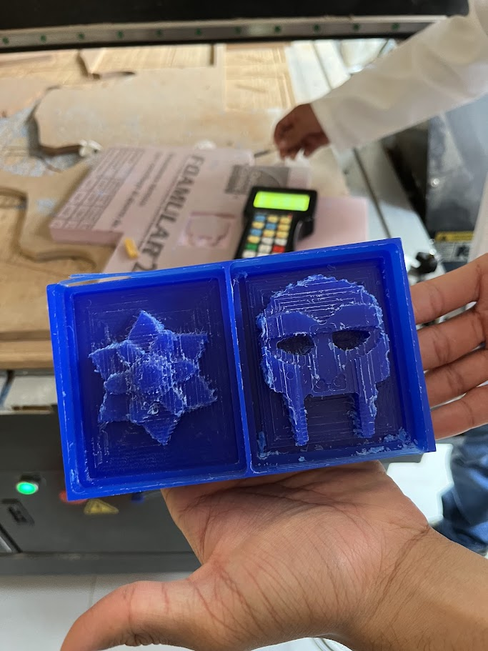
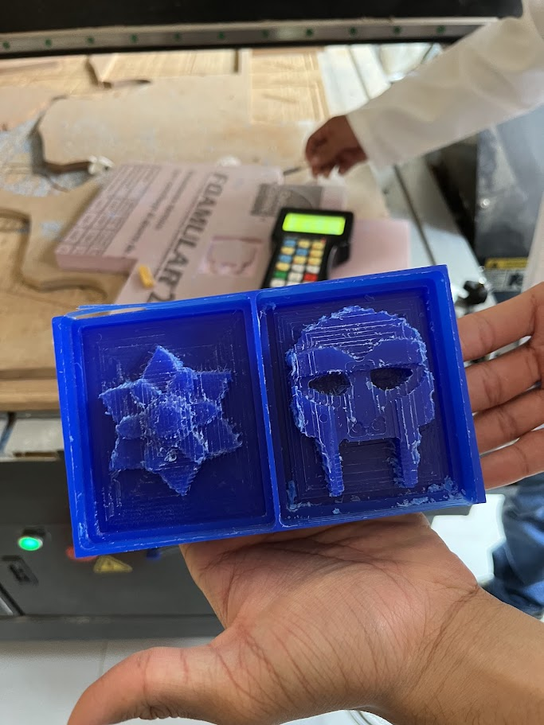
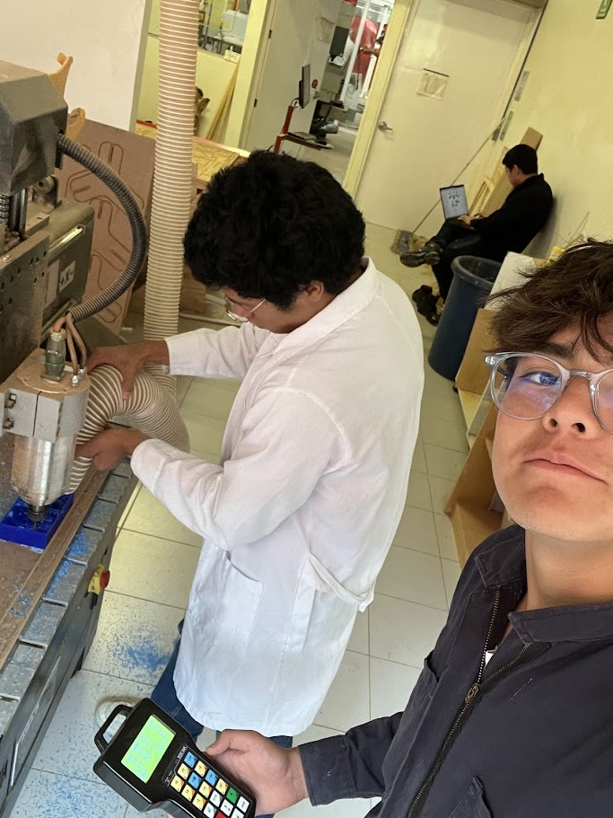

Portafolio de Actividades
Introduccion a Ing. Mecatrónica
Departamento de Ciencias e Ingenierías | Universidad Iberoamericana Puebla, México.
Molde de silicon.

- Materiales -
Los materiales empleados para desarrollar la práctica son:
Bloque de espuma
Bloque de cera
Silicón
Catalizador para silicón
Resina epoxi
Catalizador para resina
Bata, guantes y botas
- Diseño -
Este fue el diseño que usamos para hacer el modelado.
 

- Usando la maquina -
Este fue el diseño que usamos para hacer el modelado.

- Molde -
Posteriormete hicimos un molde empleando nuestro contramolde, silicón y catalizador. Para hacerlo se coloca una proporción de catalizador de 1:10 de silicón, se pincelea una capa suavemente sobre la superficie donde se coloca la mescla para eludir la formación de burbujas y que se capturen la mayor cantidad de detalles y se deja secar. Si el proceso se realizó correctamente, el molde saldrá en cuestión de horas.
- Proceso -

- Resultado -

- Figura -
Por útimo, hicimos una figura de resina epoxi ocupando nuestro molde de silicón genérico. Era un proceso similar al del molde de silicón, se requirió verter una porción de 1:1, es decir, 50% de catalizador y 50% de resina, es obligatoria la precisión, puesto que la resina reacciona de forma exotérmica al contacto con el catalizador, también porque si no se lleva a cabo correctamente puede no cuajar o expandirse y perder la forma que debería tener.
- Proceso -

- Conclusiones -
El uso de máquinas CNC es sumamente útil para la cración de piezas o moldes 3D en caso de no contar con otras herramientas substractivas o aditivas, puesto que cuenta con mucha precisión. El proceso de creación de moldes es fascinante, se debe tener precisión y paciencia en esos procesos, ya que si se carece de alguno de estos elementos es posible que el resultado falle. Es claro que en ambos procesos, CNC y Moldes es indispensable las herramientas de seguridad (Botas, guantes y bata) para evitar exponerse a riesgos innecesarios.